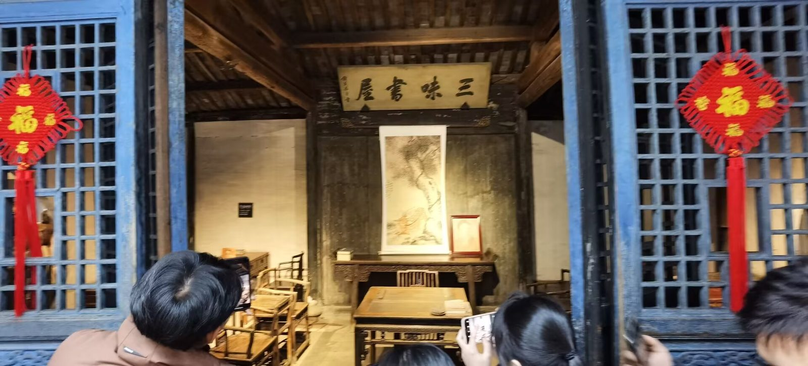
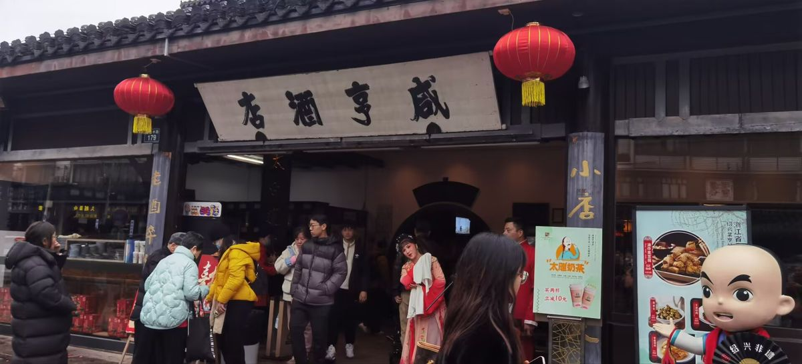
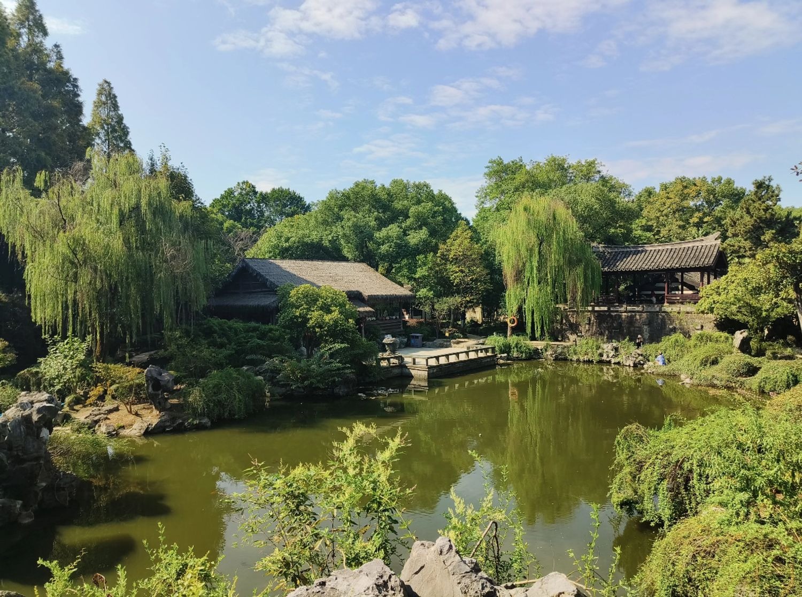
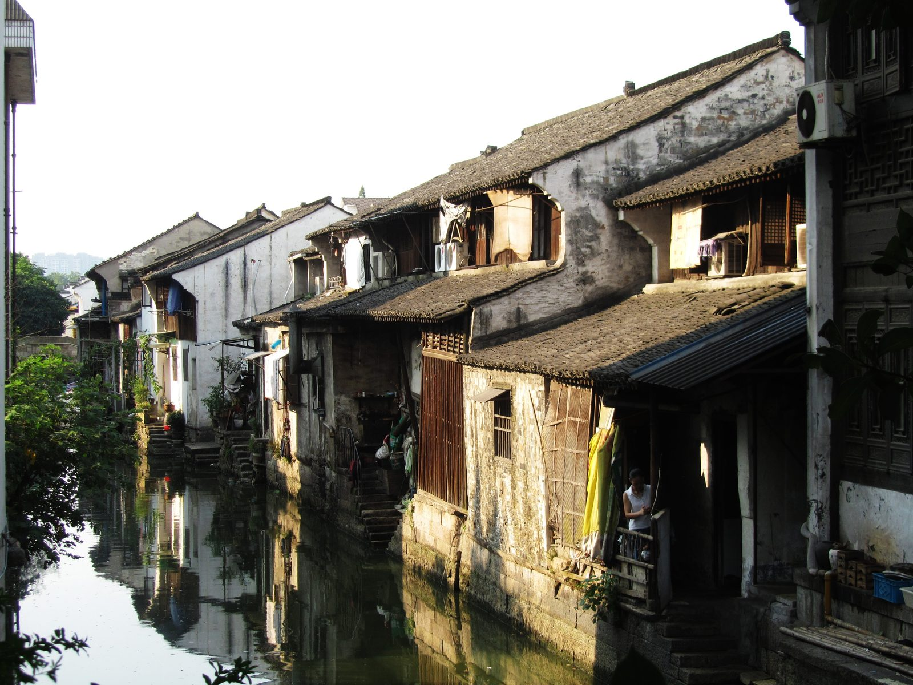
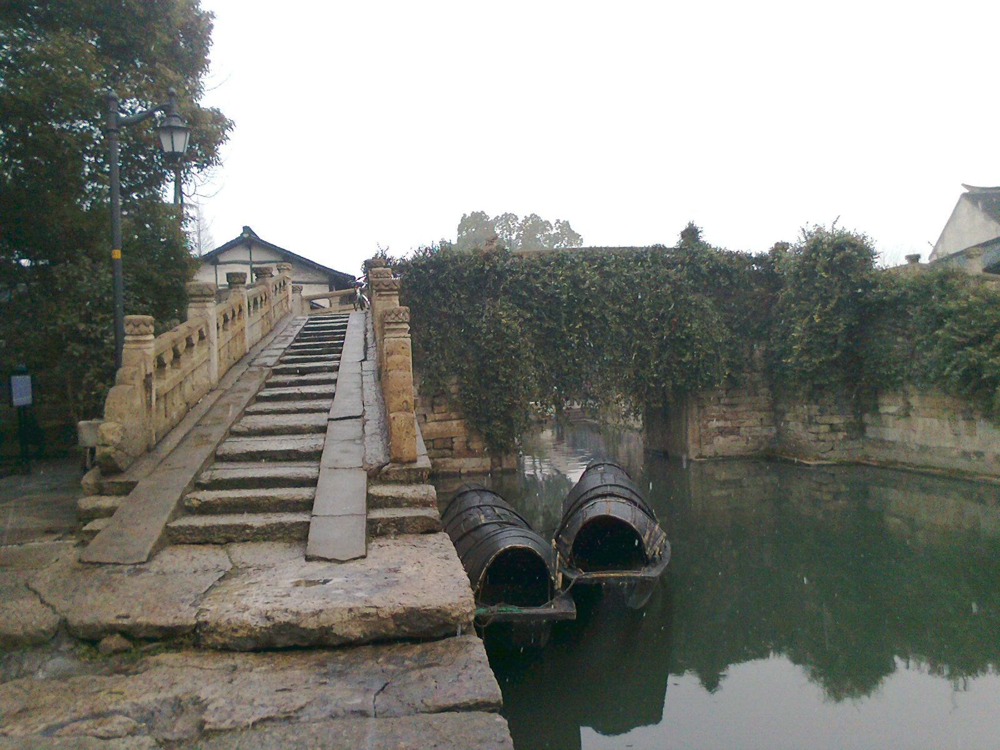
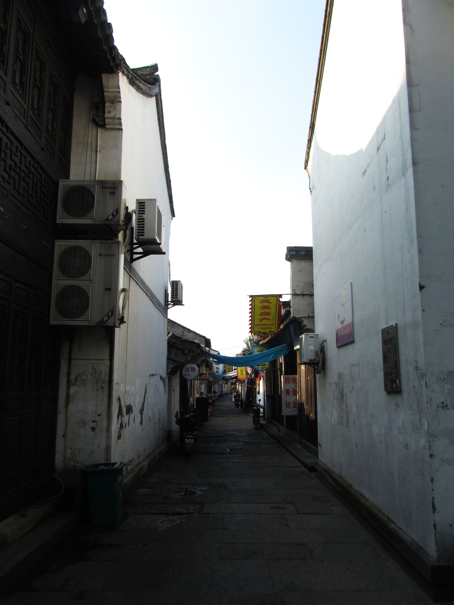
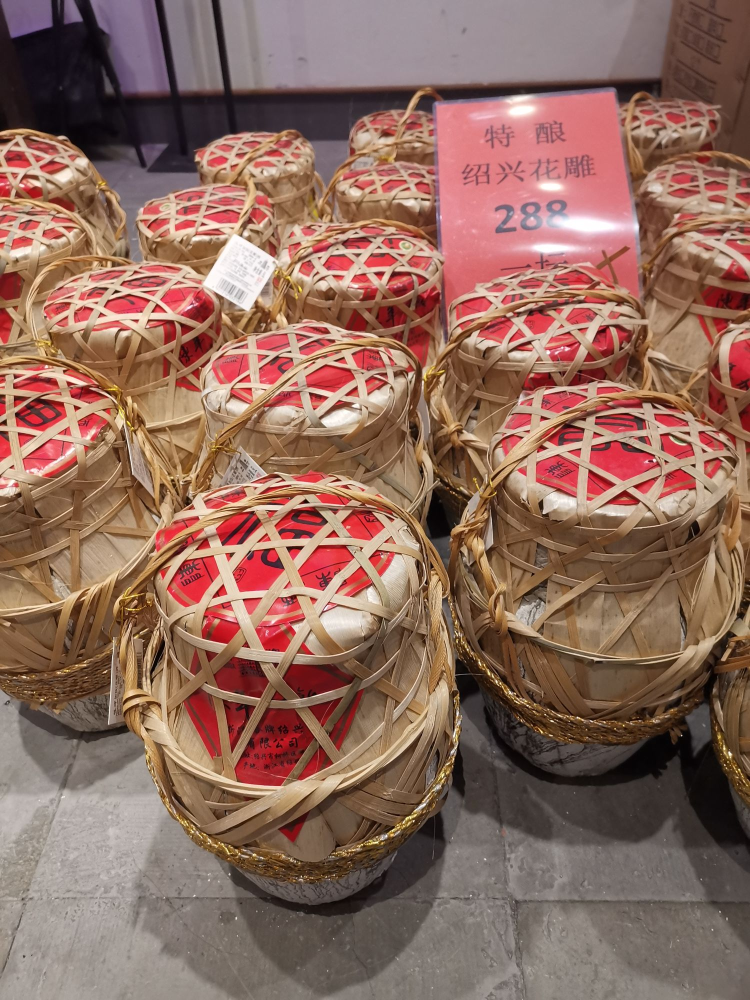

行程速览
一整天都圈在古城核心 2 公里里：上午读鲁迅，午后逛宋园与老街，傍晚看桥、喝酒、买东西。景点之间基本步行可达，只有往返高铁站需要打车或坐地铁。
高铁与接驳
沪绍之间班次密集，上海虹桥 → 绍兴北最快约 73 分钟。选车次的两个原则：去程别太早（古城 8:30 才开园），回程给足 40 分钟缓冲（绍兴北站不小，进站要走一段）。
去程 · 挑 08:00 前后这一班
上海虹桥 08:05 开，经嘉兴南、杭州东，09:18 到绍兴北，全程 1 小时 13 分。停站少、时间最贴合，二等座百元上下。落地后打车 25 分钟，10:00 前就能站到鲁迅故里门口。
同样是 8 点档，多停金山北一站，晚 15 分钟到。买不到 G7503 就上这班，行程整体往后推 15 分钟即可，不必改计划。
打车：15–17 公里，25–30 分钟，约 40 元，网约车在出站层随叫随到 —— 一日游时间紧，回程建议也打车。
地铁：轨道交通 1 号线支线（黄酒小镇方向）坐 4 站到黄酒小镇，同站换 1 号线（芳泉方向）坐 7 站到「鲁迅故里」站，全程约 50 分钟、3–5 元，A1 口出站步行约 400 米到景区。
去程车次参考
| 车次 | 上海虹桥 | 绍兴北 | 历时 | 说明 |
|---|---|---|---|---|
| G7503 | 08:05 | 09:18 | 1h13 | 首选，停站少 |
| G7549 | 08:10 | 09:33 | 1h23 | 备选，多停金山北 |
| G7505 | 08:57 | 10:15 | 1h18 | 起不来床的兜底方案 |
返程车次参考
| 车次 | 绍兴北 | 上海虹桥 | 历时 | 说明 |
|---|---|---|---|---|
| G7562 | 19:04 | 20:23 | 1h19 | 首选，19:00 档最贴合 |
| D3133 / D3132 | 19:00 | 20:34 | 1h34 | 刚好 19:00 开，动车 |
| D3206 | 19:24 | 20:48 | 1h24 | 买不到前两班的备选 |
上午 · 从百草园到三味书屋
关键词：课本现场、免费但要预约、咸亨的茴香豆。鲁迅故里是一整片街区，故居、百草园、三味书屋、纪念馆都在里面，走完约 2 小时。
高铁落地 → 鲁迅故里 → 咸亨午餐


午后 · 沈园一场旧梦，直街一段烟火
关键词：钗头凤、环山河、臭豆腐与奶油小攀。这一段全程步行，从鲁迅中路往北，一路走到八字桥，共约 2.5 公里。
沈园 → 仓桥直街 → 八字桥



傍晚 · 书圣故里，带一壶酒回家
关键词：墨池、题扇桥、黄酒与茴香豆。王羲之住过的地方，如今是咖啡馆、旧书店和酱油铺混在一起的老巷子，收尾最舒服。
书圣故里 → 伴手礼 → 绍兴北


不安排住宿 · 三条备选线
当天往返，本页不安排住宿（若临时想留一晚，古城内鲁迅故里 / 仓桥直街一带民宿约 180–400 元，出门就是老街）。下面三条是主线的平替：体力一般就砍掉书圣故里，想看点山水或书法就换掉午后那段。
东湖 · 乌篷船穿岩洞
古代采石场留下的峭壁与深潭，坐乌篷船从陶公洞、仙桃洞底下穿过去，石壁贴着脸走。门票 50 元（线上常约 45 元），船费约 40–85 元 / 船可坐 3 人。离古城 4 公里，打车 15 分钟。
兰亭 · 曲水流觞
王羲之写《兰亭集序》的地方，鹅池、御碑亭（康熙乾隆同碑）、曲水流觞都在。门票 70 元，在城西南 12 公里，来回打车约 40 分钟，需要把午后压到只有沈园。
安昌 · 腊肠与酱园
离绍兴北站只有 8 公里，最适合放在返程前：老街免费，仁昌酱园、腊肠酱鸭挂满廊檐，展馆联票 50 元（不逛展馆可不买）。逛 1 小时，再打车 15 分钟到站正好。
绍兴味道
绍兴菜的灵魂是四个字：霉、糟、醉、鲜。霉干菜与臭豆腐是"闻着臭吃着香"，糟鸡醉蟹是黄酒入菜，其余的鲜，都靠河鲜和越鸡撑着。一整天可以这样安排：午餐吃桌菜，下午吃小吃，走的时候带酒。
绍兴人喝酒讲究温着喝，老街的烟火气就沿河铺开 —— 真实照片，摄于仓桥直街（Wikimedia Commons）。
霉干菜扣肉头牌
乌黑的芥菜干吸饱五花肉的油，肉酥烂、菜回甘，配荷叶夹或直接拌饭。咸亨、寻宝记都做得稳。
绍三鲜
鱼圆、肉圆、蛋饺三件套，加河虾、笋片、肉皮用清鸡汤慢炖，汤清味厚，一桌人的安全牌。
绍兴臭豆腐约 10 元
用苋菜梗卤水发酵，臭味淡雅，外皮薄脆内里爆汁，甜酱辣酱双蘸。仓桥直街、鲁迅故里的老摊最地道。
茴香豆约 15 元 / 碟
《孔乙己》同款，豆子煮得绵软咸香，越嚼越有味道 —— 配黄酒才是正确打开方式。
黄酒 · 太雕 / 花雕约 38 元 / 壶
绍兴黄酒分元红、加饭、善酿、香雪，太雕偏甜、花雕醇厚，温到 40℃ 左右最香。别空腹喝。
糟鸡 / 醉鸡
越鸡用陈年酒糟腌，皮爽肉滑、酒香清透，冷盘上桌，解腻一绝。
奶油小攀约 4 元
绍兴版蛋挞，酥壳托着烤到金黄的蛋奶馅，甜而不腻，老城区的怀旧点心。
次坞打面人均 20 元
手工捶打的面条筋道弹牙，浇头可要大排、雪菜肉丝、腰花，早餐或赶车前的一碗正好。
安昌酱鸭 · 腊肠
酱油、香料、黄酒腌后自然风干，酱香紧实，可真空打包当伴手礼 —— 年味的代表。
午餐主场。堂食区就是课文场景，茴香豆 + 太雕 + 霉干菜扣肉。
小吃一条街。孔乙己酒家（112 号）、状元楼、沿河臭豆腐摊，边走边吃。
三味臭豆腐、奶油小攀、黄酒棒冰，逛景区顺手解决下午茶。
咖啡馆、小酒馆、旧书店混在民居里，适合返程前坐一会儿。
实用贴士
一日游最怕两件事：预约没做和错过返程车。把这两件办掉，其余都很松弛。
鲁迅故里必须预约
免费但需实名分时预约，在「绍兴市文旅集团」或「鲁迅纪念馆」公众号操作。周末建议提前 3–5 天，选 10:00–12:00 时段；现场基本无票，别赌。
门票怎么买划算
只去沈园就单买 40 元；若还想加东湖、兰亭、大禹陵，买「古城联票五选四」145–160 元更划算。60–69 岁、全日制学生半价，70 岁以上免大门票。
10 月末的天气
绍兴常年此时 13–22℃，早晚温差大，薄外套 + 长袖即可；秋雨说来就来，带把折叠伞。青石板路遇雨打滑，穿平底鞋。
返程卡点
19:04 的 G7562 是舒适线，18:30 前进站最稳。绍兴北站进站口到站台有一段路，周末排队安检要时间；打车从古城到站按 30 分钟算。
古城内怎么走
景点集中在 2 公里内，共享单车最自由；老城区部分街巷禁行机动车，别指望打车穿巷子。步行导航用「步行」模式，会带你走桥和巷子。
人多与吃饭
周六下午仓桥直街最挤，建议 14:30 前到；咸亨 12 点前入座不用等号。景区门口的特产溢价高，黄酒茴香豆去市区超市买，便宜近一半。